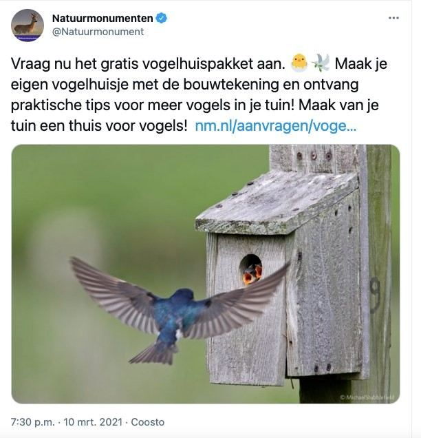

Boomzwaluw, geen Nederlandse zwaluw
11 maart 2021 · Natuurmonumenten
- Op de foto
- Boomzwaluw (Tree swallow)
- Het ging over
- Nederlandse zwaluw

Iemand die in Noord-Amerika woont en graag een Boomzwaluw (Tree swallow) in zijn tuin wil hebben?
@natuurmonumenten